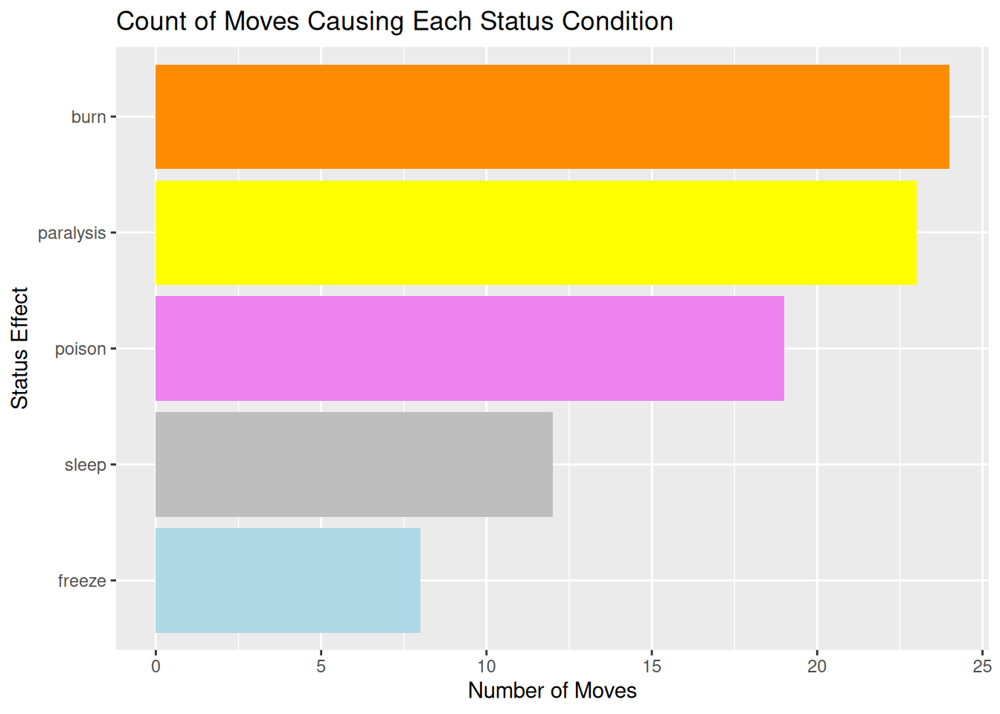
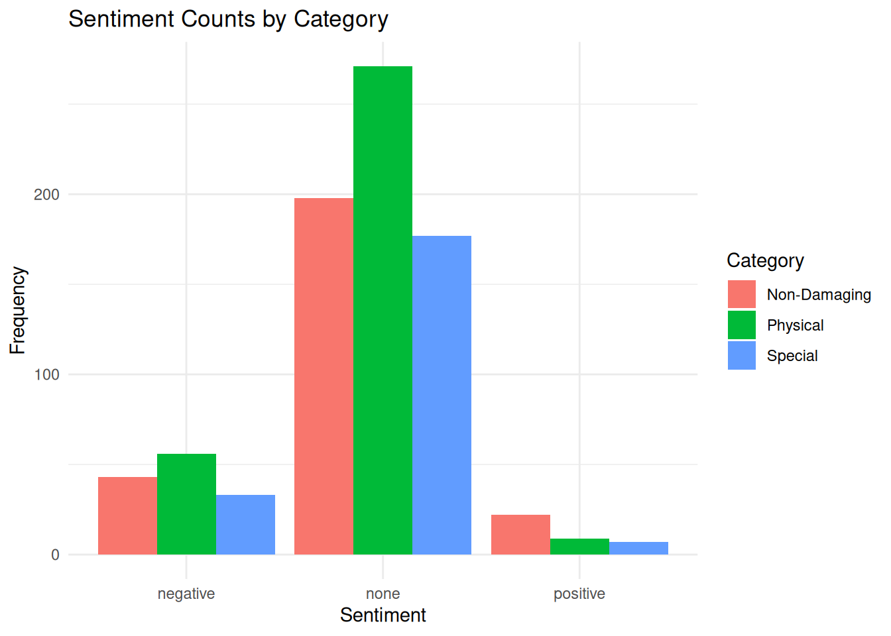
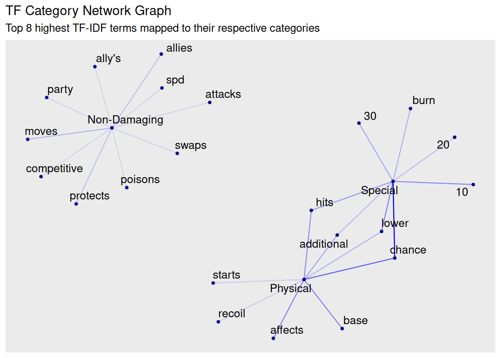

Load packages and data
library(tidyverse)
library(tidytext)
library(textdata)
library(ggraph)
library(tidygraph)
# the moves dataset
moves <- read.csv("moves_df.csv")A text analysis of move descriptions
Team project with Martin Tran for STAT 405, Advanced Data Computing. Full code and data on GitHub.
Pokemon is a Japanese media franchise with major influence in the toys, collectibles, and animation industry. Originally gone by Pocket Monsters, Pokemon is a recognizable franchise that has grown on a massive scale within the past three decades. The franchise takes place in a fictional universe where monsters, called Pokemon, live alongside humans while having special abilities and powers. They use those powers mainly in battle, where Pokemon go against one another to see who comes out on top. Moves refer to techniques Pokemon use in battle. These moves, along with a Pokemon’s stats determine the results of a battle, along with the selection of moves. In our blog, we will investigate the moves the Pokemon have and the unique characteristics that enabled the specimens to enact their powers.
The dataset we are using is from a larger datasets about Pokemon and the competitive scene found in Kaggle. It only contains moves up to Generation 8 with information on each move and what they are capable of. It contains the name of each move, its category, power, accuracy, priority, pp (power points; determines the amount of times a move can be used in battle), description of every move, and type.
Moves have names allowing people to recognize the moves and have a broad idea of what it can do. Each move is categorized into different attacks. The three categories are special, physical, and non-damaging. Every move has a damage output, ranging from 0 to One-Hit Knockouts or OHKOs. One-shotting your opponents may seem absurd and powerful, but there are usually downsides to it. One of them being is that they have really low accuracy (Horn Drill has 30% accuracy). You are not guaranteed to hit every move. Accuracy is listed in the dataset with the moves. Moves have different priority, meaning some hits faster before other attacks while others attack slower than others. Unfortunately you can’t reuse moves all the time. They have a set amount of usage called power points (pp). The main reason for the data set is that it contains the description of the moves needed for our text analysis. All of it is listed in a column. The last column relates to the typing of the move, which gives a buff or debuff on damage depending on a different typing.
Pokemon moves vary in its usages, whether it is to manifest a power to heal or transform, or to attack and create hazards. With almost a thousand different types of moves in the Pokemon universe excluding moves from the Pokemon Trading Card Game, there consist a variety of moves that either follow a common concept to moves unique to certain pokemon. Every pokemon has their own movepool, meaning their own set of moves that they can learn. Each Pokemon learns moves mainly based around their type (it isn’t always the case but most of the time it is), like Squirtle being able to learn Water Gun or Pikachu learning Thunder Shock.
Because of how integrated moves are in gameplay, both casually and competitively, having access to all of the moves available lets people experiment and enjoy using different ones. In the newest game releases of the Pokemon franchise, they have built-in systems showing players what moves are effective and if they do multiple hits to multiple pokemon. For casuals, the dataset is more than enough. For competitive players, having more knowledge than your opponent can give you an edge in the fight. It is like playing chess. That is our goal with the deep text analysis. To showcase the frequency and number of moves doing certain abilities. This allows players/trainers to have flexibility in their gameplay.
There are two main formats with moves having a significant importance in the battles and gameplay. That being casual and competitive. In our analysis, we will lean towards more a competitive and more practical viewpoint. In the game and animation, Pokemon are only allowed to remember a moveset with up to four moves. Each person is only allowed to use up to six pokemon. People, or trainers, will have to use these limited moves to compete against other trainers and pokemon. But before we get into the specifics, let’s talk about the physical-special split. Every move can either be physical, which refers to mainly contact based moves and are stronger based on the Pokemon’s Attack stat, or special, which refers to moves that are ranged that are stronger based on the Pokemon’s Special Attack stat. Along with these categories, there is a category which contains non-damaging moves as well. These moves are usually more strategic and used for a number of purposes, like increasing the stats of your own Pokemon, or inflicting a status condition on the opponent (We’ll cover status conditions later in the blog post).
The tokenization below shows the naming of pokemon moves. It shows how physical, special and non dmg moves are named.
The table above shows that physical moves like mentioned earlier tend to be contact moves, like punches and kicks, whereas non damage moves are ranged like beams and pulses. The use for this is to differentiate and clarify the difference in those moves and how one can easily tell if the moves are physical, special, or non damaging by looking at the name alone.
We decided to use tokenization again to determine the difference in the descriptions of damaging and non damaging moves. This has been done in order to have a deeper understanding of the importance of non damaging moves. More casual players tend to keep only damaging moves on their Pokemon due to the seemingly low difficulty of the mainline games, though the competitive side is a whole different story. Knowing the purpose of non damaging moves is helpful and it allows one’s moveset to diversify according to a number of situations in battle. They may be the true turning point in a battle too, where a certain stat increase/decrease would win/lose you the entire match. Below is the code for our tokenization for move descriptions, highlighting the top 10 most used words (aside from stop words like ‘the’, ‘and’, etc) in physical, special and non-damaging moves.
# TOP 10 MOST REPEATED WORDS/TERMS IN MOVE DESCRIPTIONS OF EACH CATEGORY
tokens <- moves %>%
select(name, category, description) %>%
unnest_tokens(output = word, input = description, token = "words") %>%
filter(!(word %in% stop_words$word)) %>%
count(category, word, sort = TRUE)
top_words <- tokens %>%
group_by(category) %>%
slice_max(n, n = 10) %>%
ungroup() %>%
arrange(desc(n))
head(top_words, 10)As seen above, damaging moves have keywords like ‘power’, ‘target’, ‘chance’. Non-damaging moves are dominated by words like raises, lowers, user. Non-damaging moves directly effect stats of either your own Pokemon or the opposing Pokemon, allowing you or your opponent to change the tide of the battle completely.
When we talk about status conditions, they can be inflicted by both damaging or non-damaging moves. For example a non-damaging move Will-o-wisp has a guaranteed chance to burn the opponent, whereas a damaging move Fire Punch has a 10% chance to burn the opponent. One could say “oh why don’t we just use the attacking move? It does damage along with a chance to burn so it’s a win-win right?” Wrong. The explanation here is the status “Burn” cuts the Pokemon’s attack stat in half when inflicted, so it’ll hit half as hard using physical moves if burned. So against a strong physical attacking Pokemon like let’s say Haxorus which has a base attack stat of 147, hitting it with fire punch isn’t going to do much as it’s not very effective due to match-ups, but will-o-wisp will guarantee a burn, making it so Haxorus won’t do much damage for the rest of the battle. Instead of relying on chance, you get a guaranteed debuff on your opponent so they have to change up their game plan to move around it.
For showing status effects and the variety of status moves across the entire list of moves, we used Regular Expressions to count moves that have either a chance or guarantee inficting a status condition onto an opponent. These status conditions include Burn, Paralysis, Sleep, Freeze, and Poison. The code along with the graph below show the amount of moves which have status conditions, allowing players to see which status condition is most common.
moves_status <- moves |>
mutate(
lower_case = str_to_lower(description),
causes_burn = str_detect(lower_case, "burn"),
causes_freeze = str_detect(lower_case, "freeze"),
causes_sleep = str_detect(lower_case, "sleep"),
causes_paralysis = str_detect(lower_case, "paraly"),
causes_poison = str_detect(lower_case, "poison")
)
status_counts <- moves_status |>
summarize(
burn = sum(causes_burn),
freeze = sum(causes_freeze),
sleep = sum(causes_sleep),
paralysis = sum(causes_paralysis),
poison = sum(causes_poison)
) |>
pivot_longer(cols = everything(), names_to = "status", values_to = "count")
ggplot(status_counts,
aes(x = reorder(status, count), y = count, fill = status)) +
geom_col() +
scale_fill_manual(values =
c(
"burn" = "darkorange",
"paralysis" = "yellow1",
"sleep" = "grey",
"freeze" = "lightblue",
"poison" = "violet"
)
) +
coord_flip() +
labs(title = "Count of Moves Causing Each Status Condition",
x = "Status Effect",
y = "Number of Moves") +
theme(legend.position = "none")
According to the graph above and the table created, we see that ‘Burn’ is most commonly seen in moves, followed by paralysis, poison, sleep, and then freeze. All of these status conditions are useful in their own way, some requiring more luck than strategy like Freeze and Sleep in a number of occasions. Burn seems to be the most abundant of them all and arguably the most game changing as well due to it halving the attack of the Pokemon. It goes to show how these status effects are spread across a lot of Pokemon’s movepools and how a number of people tend to overlook them when causually playing through the mainline games.
We performed sentiment analysis on each category of moves based on their description. Positive sentiment would include increasing stats, negative would be inflicting burn or decreasing stats, none would be normal damaging moves for the most part.

The visualization above shows that physical moves have the most neutral and negative sentiments, while non-damaging moves have the most positive sentiments. That is most likely due to the stat boosting moves like ‘Swords Dance’ or ‘Dragon Dance’. However, due to the majority of moves being NAs, we can’t make a promising hypothesis. This is likely due to the sentiment analysis not being large enough to cover words used in the move descriptions. This includes “bing” and “nrc” sentiments.
A tf-idf analysis lets us see the frequency of words in the descriptions and how often they are used, allowing us to have a good indication of how often we would see moves with that specific word. This is proven useful as we get an idea of how often a move is used and what the outcome from it can be. In the analysis, there are three categories for the moves: special, physical, and non-damaging. For special moves, the words shown most frequently are chance, lower, and 10. There are a good amount of moves with description relating to those three words. Such as saying it has a 10% chance to lower a certain stat. Following that structure, we can the an approximate probability of a move in the category will behave if we had no knowledge of the move itself. It is not the best indicator but it works to give us a basic intuition.
The information we received using the tf-idf analysis can be visualized into a network graph for a visual representation of the numbers. Alongside of showing the words with the highest frequency shown in the category, it shows the connections between categories as shown in the graph below.
top <- tf_idf %>%
group_by(category) %>%
slice_max(tf_idf, n = 8) %>%
ungroup()
graph_data <- as_tbl_graph(top)
ggraph(graph_data, layout = "fr") +
geom_edge_link(aes(edge_alpha = tf), colour = "blue", show.legend = FALSE) +
geom_node_text(aes(label = name), repel = TRUE, size = 4) +
geom_node_point(size = 1, colour = "darkblue") +
labs(title = "TF Category Network Graph",
subtitle = "Top 8 highest TF-IDF terms mapped to their respective categories")
The network map showcases the relation between the word and category. The darker the lines, the more frequent it appeared in the group. One of the benefits with this visualization is that it showcases the similarity between the groups as well as making sure it is distinct from the others.
The information above sums up correlations, information and comparisons needed to get into more in depth with competitive playstyles. A number of fans who have been playing for years would know this information by heart. However that doesn’t mean newer players are unable to catch up. This blog post is designed to help newer players to understand the main mechanic of the game, moves, as well as how they work and how they’re used. The newest Pokemon game, Pokemon Champions, has risen in popularity since release and has encouraged newer players to get into the competitive scene, as entire focus of the game is the competitive format. Players starting out and trying to get into the rankings need ways to get the basics down and really need to understand important information like type match-ups, move info, move effects, status effects etc,.
moves_df) — Kaggle---
title: "Importance of Pokémon Moves for New and Improving Players"
subtitle: "A text analysis of move descriptions"
format:
html:
df-print: paged
code-fold: true
code-tools: true
toc: true
toc-depth: 2
---
*Team project with Martin Tran for STAT 405, Advanced Data Computing. Full code and data on [GitHub](https://github.com/ADC-405-S26/Project_3_TextAnalysis_Team_3).*
```{r}
#| message: false
#| warning: false
#| code-summary: "Load packages and data"
library(tidyverse)
library(tidytext)
library(textdata)
library(ggraph)
library(tidygraph)
# the moves dataset
moves <- read.csv("moves_df.csv")
```
## Introduction
Pokemon is a Japanese media franchise with major influence in the toys, collectibles, and animation industry. Originally gone by Pocket Monsters, Pokemon is a recognizable franchise that has grown on a massive scale within the past three decades. The franchise takes place in a fictional universe where monsters, called Pokemon, live alongside humans while having special abilities and powers. They use those powers mainly in battle, where Pokemon go against one another to see who comes out on top. Moves refer to techniques Pokemon use in battle. These moves, along with a Pokemon's stats determine the results of a battle, along with the selection of moves. In our blog, we will investigate the moves the Pokemon have and the unique characteristics that enabled the specimens to enact their powers.
The dataset we are using is from a larger datasets about Pokemon and the competitive scene found in Kaggle. It only contains moves up to Generation 8 with information on each move and what they are capable of. It contains the name of each move, its category, power, accuracy, priority, pp (power points; determines the amount of times a move can be used in battle), description of every move, and type.
Moves have names allowing people to recognize the moves and have a broad idea of what it can do. Each move is categorized into different attacks. The three categories are special, physical, and non-damaging. Every move has a damage output, ranging from 0 to One-Hit Knockouts or OHKOs. One-shotting your opponents may seem absurd and powerful, but there are usually downsides to it. One of them being is that they have really low accuracy (Horn Drill has 30% accuracy). You are not guaranteed to hit every move. Accuracy is listed in the dataset with the moves. Moves have different priority, meaning some hits faster before other attacks while others attack slower than others. Unfortunately you can't reuse moves all the time. They have a set amount of usage called power points (pp). The main reason for the data set is that it contains the description of the moves needed for our text analysis. All of it is listed in a column. The last column relates to the typing of the move, which gives a buff or debuff on damage depending on a different typing.
Pokemon moves vary in its usages, whether it is to manifest a power to heal or transform, or to attack and create hazards. With almost a thousand different types of moves in the Pokemon universe excluding moves from the Pokemon Trading Card Game, there consist a variety of moves that either follow a common concept to moves unique to certain pokemon. Every pokemon has their own movepool, meaning their own set of moves that they can learn. Each Pokemon learns moves mainly based around their type (it isn't always the case but most of the time it is), like Squirtle being able to learn Water Gun or Pikachu learning Thunder Shock.
Because of how integrated moves are in gameplay, both casually and competitively, having access to all of the moves available lets people experiment and enjoy using different ones. In the newest game releases of the Pokemon franchise, they have built-in systems showing players what moves are effective and if they do multiple hits to multiple pokemon. For casuals, the dataset is more than enough. For competitive players, having more knowledge than your opponent can give you an edge in the fight. It is like playing chess. That is our goal with the deep text analysis. To showcase the frequency and number of moves doing certain abilities. This allows players/trainers to have flexibility in their gameplay.
There are two main formats with moves having a significant importance in the battles and gameplay. That being casual and competitive. In our analysis, we will lean towards more a competitive and more practical viewpoint. In the game and animation, Pokemon are only allowed to remember a moveset with up to four moves. Each person is only allowed to use up to six pokemon. People, or trainers, will have to use these limited moves to compete against other trainers and pokemon. But before we get into the specifics, let's talk about the physical-special split. Every move can either be physical, which refers to mainly contact based moves and are stronger based on the Pokemon's Attack stat, or special, which refers to moves that are ranged that are stronger based on the Pokemon's Special Attack stat. Along with these categories, there is a category which contains non-damaging moves as well. These moves are usually more strategic and used for a number of purposes, like increasing the stats of your own Pokemon, or inflicting a status condition on the opponent (We'll cover status conditions later in the blog post).
## Move names by category
The tokenization below shows the naming of pokemon moves. It shows how physical, special and non dmg moves are named.
```{r}
#| code-summary: "Tokenize move names by category"
tokens2 <- moves %>%
select(name, category, description) %>%
unnest_tokens(output = word, input = name, token = "words") %>%
filter(!(word %in% stop_words$word)) %>%
count(category, word, sort = TRUE)
head(tokens2)
```
The table above shows that physical moves like mentioned earlier tend to be contact moves, like punches and kicks, whereas non damage moves are ranged like beams and pulses. The use for this is to differentiate and clarify the difference in those moves and how one can easily tell if the moves are physical, special, or non damaging by looking at the name alone.
## What move descriptions reveal
We decided to use tokenization again to determine the difference in the descriptions of damaging and non damaging moves. This has been done in order to have a deeper understanding of the importance of non damaging moves. More casual players tend to keep only damaging moves on their Pokemon due to the seemingly low difficulty of the mainline games, though the competitive side is a whole different story. Knowing the purpose of non damaging moves is helpful and it allows one's moveset to diversify according to a number of situations in battle. They may be the true turning point in a battle too, where a certain stat increase/decrease would win/lose you the entire match. Below is the code for our tokenization for move descriptions, highlighting the top 10 most used words (aside from stop words like 'the', 'and', etc) in physical, special and non-damaging moves.
```{r}
#| code-summary: "Top 10 words in move descriptions, by category"
# TOP 10 MOST REPEATED WORDS/TERMS IN MOVE DESCRIPTIONS OF EACH CATEGORY
tokens <- moves %>%
select(name, category, description) %>%
unnest_tokens(output = word, input = description, token = "words") %>%
filter(!(word %in% stop_words$word)) %>%
count(category, word, sort = TRUE)
top_words <- tokens %>%
group_by(category) %>%
slice_max(n, n = 10) %>%
ungroup() %>%
arrange(desc(n))
head(top_words, 10)
```
As seen above, damaging moves have keywords like 'power', 'target', 'chance'. Non-damaging moves are dominated by words like raises, lowers, user. Non-damaging moves directly effect stats of either your own Pokemon or the opposing Pokemon, allowing you or your opponent to change the tide of the battle completely.
## Status conditions (regular expressions)
When we talk about status conditions, they can be inflicted by both damaging or non-damaging moves. For example a non-damaging move Will-o-wisp has a guaranteed chance to burn the opponent, whereas a damaging move Fire Punch has a 10% chance to burn the opponent. One could say "oh why don't we just use the attacking move? It does damage along with a chance to burn so it's a win-win right?" Wrong. The explanation here is the status "Burn" cuts the Pokemon's attack stat in half when inflicted, so it'll hit half as hard using physical moves if burned. So against a strong physical attacking Pokemon like let's say Haxorus which has a base attack stat of 147, hitting it with fire punch isn't going to do much as it's not very effective due to match-ups, but will-o-wisp will guarantee a burn, making it so Haxorus won't do much damage for the rest of the battle. Instead of relying on chance, you get a guaranteed debuff on your opponent so they have to change up their game plan to move around it.
For showing status effects and the variety of status moves across the entire list of moves, we used Regular Expressions to count moves that have either a chance or guarantee inficting a status condition onto an opponent. These status conditions include Burn, Paralysis, Sleep, Freeze, and Poison. The code along with the graph below show the amount of moves which have status conditions, allowing players to see which status condition is most common.
```{r}
#| code-summary: "Detect status conditions with regex and plot counts"
moves_status <- moves |>
mutate(
lower_case = str_to_lower(description),
causes_burn = str_detect(lower_case, "burn"),
causes_freeze = str_detect(lower_case, "freeze"),
causes_sleep = str_detect(lower_case, "sleep"),
causes_paralysis = str_detect(lower_case, "paraly"),
causes_poison = str_detect(lower_case, "poison")
)
status_counts <- moves_status |>
summarize(
burn = sum(causes_burn),
freeze = sum(causes_freeze),
sleep = sum(causes_sleep),
paralysis = sum(causes_paralysis),
poison = sum(causes_poison)
) |>
pivot_longer(cols = everything(), names_to = "status", values_to = "count")
ggplot(status_counts,
aes(x = reorder(status, count), y = count, fill = status)) +
geom_col() +
scale_fill_manual(values =
c(
"burn" = "darkorange",
"paralysis" = "yellow1",
"sleep" = "grey",
"freeze" = "lightblue",
"poison" = "violet"
)
) +
coord_flip() +
labs(title = "Count of Moves Causing Each Status Condition",
x = "Status Effect",
y = "Number of Moves") +
theme(legend.position = "none")
```
According to the graph above and the table created, we see that 'Burn' is most commonly seen in moves, followed by paralysis, poison, sleep, and then freeze. All of these status conditions are useful in their own way, some requiring more luck than strategy like Freeze and Sleep in a number of occasions. Burn seems to be the most abundant of them all and arguably the most game changing as well due to it halving the attack of the Pokemon. It goes to show how these status effects are spread across a lot of Pokemon's movepools and how a number of people tend to overlook them when causually playing through the mainline games.
## Sentiment analysis
We performed sentiment analysis on each category of moves based on their description. Positive sentiment would include increasing stats, negative would be inflicting burn or decreasing stats, none would be normal damaging moves for the most part.
```{r}
#| code-summary: "Sentiment counts by category (bing lexicon)"
bing <- tidytext::get_sentiments("bing")
sentiment_counts <- tokens2 |>
left_join(bing, by = "word", relationship = "many-to-many") |>
count(category, sentiment) %>%
mutate(sentiment = replace_na(sentiment, replace = "none"))
sentiment_counts
```
```{r}
#| code-summary: "Plot sentiment counts by category"
ggplot(sentiment_counts, aes(x = sentiment, y = n, fill = category)) +
geom_col(position = "dodge") +
theme_minimal() +
labs(
title = "Sentiment Counts by Category",
x = "Sentiment",
y = "Frequency",
fill = "Category"
)
```
The visualization above shows that physical moves have the most neutral and negative sentiments, while non-damaging moves have the most positive sentiments. That is most likely due to the stat boosting moves like 'Swords Dance' or 'Dragon Dance'. However, due to the majority of moves being NAs, we can't make a promising hypothesis. This is likely due to the sentiment analysis not being large enough to cover words used in the move descriptions. This includes "bing" and "nrc" sentiments.
## TF-IDF analysis
A tf-idf analysis lets us see the frequency of words in the descriptions and how often they are used, allowing us to have a good indication of how often we would see moves with that specific word. This is proven useful as we get an idea of how often a move is used and what the outcome from it can be. In the analysis, there are three categories for the moves: special, physical, and non-damaging. For special moves, the words shown most frequently are chance, lower, and 10. There are a good amount of moves with description relating to those three words. Such as saying it has a 10% chance to lower a certain stat. Following that structure, we can the an approximate probability of a move in the category will behave if we had no knowledge of the move itself. It is not the best indicator but it works to give us a basic intuition.
```{r}
#| code-summary: "Compute TF-IDF by category"
tf_idf <- tokens %>%
bind_tf_idf(word, category, n)
tf_idf |>
arrange(desc(tf)) %>%
filter(idf > 0) %>%
head(5)
```
The information we received using the tf-idf analysis can be visualized into a network graph for a visual representation of the numbers. Alongside of showing the words with the highest frequency shown in the category, it shows the connections between categories as shown in the graph below.
```{r}
#| code-summary: "Network graph of top TF-IDF terms"
top <- tf_idf %>%
group_by(category) %>%
slice_max(tf_idf, n = 8) %>%
ungroup()
graph_data <- as_tbl_graph(top)
ggraph(graph_data, layout = "fr") +
geom_edge_link(aes(edge_alpha = tf), colour = "blue", show.legend = FALSE) +
geom_node_text(aes(label = name), repel = TRUE, size = 4) +
geom_node_point(size = 1, colour = "darkblue") +
labs(title = "TF Category Network Graph",
subtitle = "Top 8 highest TF-IDF terms mapped to their respective categories")
```
The network map showcases the relation between the word and category. The darker the lines, the more frequent it appeared in the group. One of the benefits with this visualization is that it showcases the similarity between the groups as well as making sure it is distinct from the others.
## Conclusion
The information above sums up correlations, information and comparisons needed to get into more in depth with competitive playstyles. A number of fans who have been playing for years would know this information by heart. However that doesn't mean newer players are unable to catch up. This blog post is designed to help newer players to understand the main mechanic of the game, moves, as well as how they work and how they're used. The newest Pokemon game, Pokemon Champions, has risen in popularity since release and has encouraged newer players to get into the competitive scene, as entire focus of the game is the competitive format. Players starting out and trying to get into the rankings need ways to get the basics down and really need to understand important information like type match-ups, move info, move effects, status effects etc,.
## Sources
- Pokémon database — [pokemondb.net](https://pokemondb.net/)
- Competitive Pokémon tier dataset (`moves_df`) — [Kaggle](https://www.kaggle.com/datasets/varlawend/competitive-pokmon-tier-dataset)
- Network graph reference — [R Graph Gallery](https://r-graph-gallery.com/network.html)